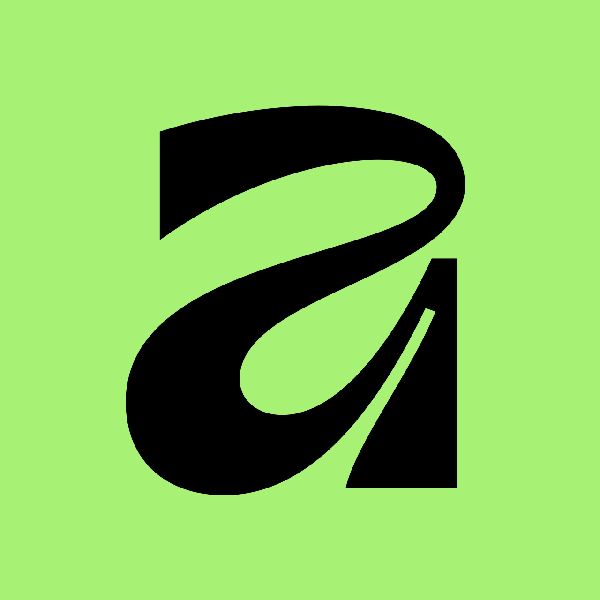
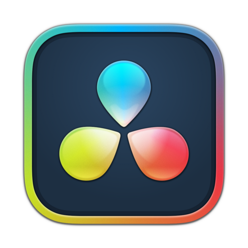
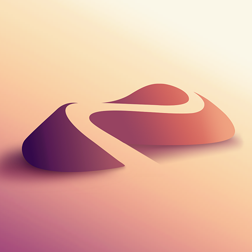

Identidad
[ BEARNER ]
¿Quién soy?
Werner Pérez Reyes [ Bearner ] estudiante de diseño digital en Medios interactivos, entusiasta de los videojuegos y la programación, el diseño multimedia como motion graphics o la edición de video.
Software & Herramientas



Paleta de Colores
Tipografía
Bebas Neue
Aa
Montserrat
Aa
Karla
Aa